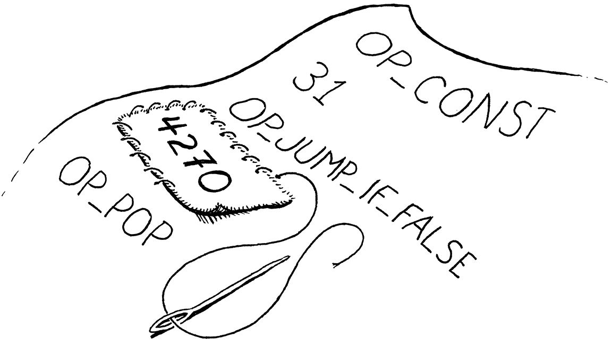
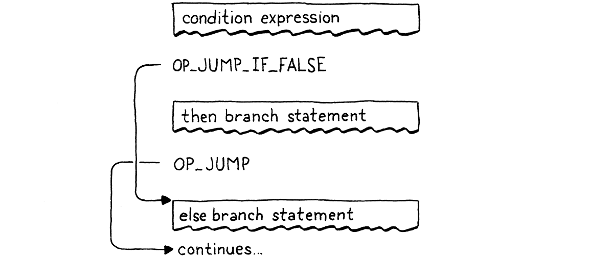
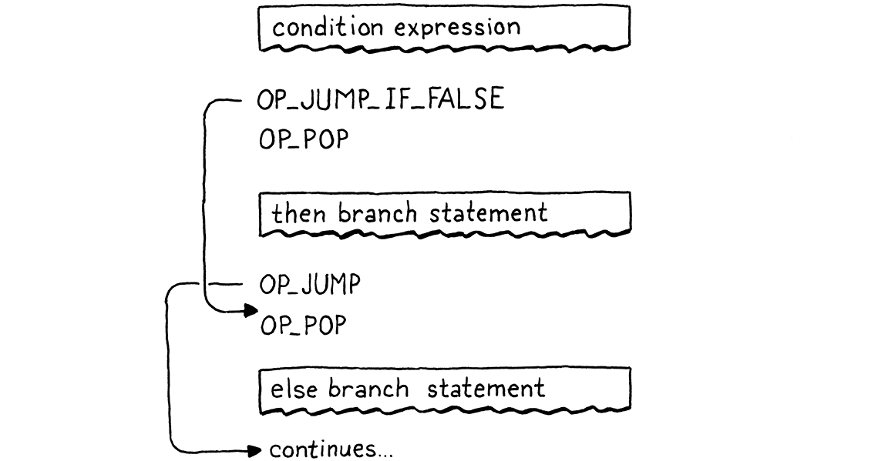
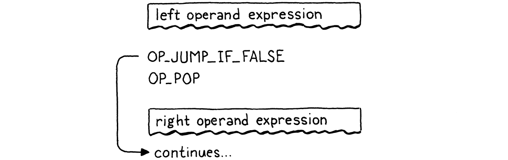

Jumping Back and Forth
Thứ tự mà tâm trí ta tưởng tượng ra giống như một tấm lưới, hoặc một cái thang, được dựng lên để đạt được điều gì đó. Nhưng sau đó, bạn phải vứt cái thang đi, vì bạn nhận ra rằng, dù nó từng hữu ích, nó cũng chẳng có ý nghĩa gì.
Umberto Eco, The Name of the Rose
Chúng ta đã mất kha khá thời gian để đi đến đây, nhưng cuối cùng cũng sẵn sàng thêm control flow vào virtual machine của mình. Trong tree-walk interpreter mà ta xây cho jlox, ta hiện thực control flow của Lox bằng chính control flow của Java. Để execute một câu lệnh if của Lox, ta dùng câu lệnh if của Java để chạy nhánh được chọn. Cách đó hoạt động, nhưng chưa thật sự thỏa mãn. Bằng “phép màu” nào mà JVM hay CPU gốc lại hiện thực được câu lệnh if? Giờ khi ta đã có bytecode VM của riêng mình để “mổ xẻ”, ta có thể trả lời câu hỏi đó.
Khi nói về “control flow”, ta đang nói đến điều gì? “Flow” ở đây là cách luồng execute di chuyển qua văn bản chương trình. Gần như thể có một con robot tí hon bên trong máy tính, lang thang qua code của ta, execute từng mảnh ở chỗ này chỗ kia. Flow là con đường mà robot đó đi, và bằng cách kiểm soát robot, ta quyết định những phần code nào nó sẽ chạy.
Trong jlox, “điểm tập trung” của robot — đoạn code hiện tại — được ngầm định dựa trên AST node nào đang được lưu trong các biến Java và ta đang ở giữa đoạn Java code nào. Trong clox, điều này tường minh hơn nhiều. Trường ip của VM lưu địa chỉ của bytecode instruction hiện tại. Giá trị của trường này chính xác là “ta đang ở đâu” trong chương trình.
Việc execute bình thường diễn ra bằng cách tăng ip. Nhưng ta có thể thay đổi biến này theo bất kỳ cách nào mình muốn. Để hiện thực control flow, tất cả những gì cần làm là thay đổi ip theo những cách thú vị hơn. Cấu trúc control flow đơn giản nhất là câu lệnh if không có else:
if (condition) print("condition was truthy");
VM sẽ evaluate bytecode của biểu thức điều kiện. Nếu kết quả là truthy, nó tiếp tục và execute câu lệnh print trong thân. Trường hợp thú vị là khi điều kiện là falsey. Khi đó, quá trình execute sẽ bỏ qua nhánh then và tiếp tục sang câu lệnh tiếp theo.
Để bỏ qua một đoạn code, ta chỉ cần đặt ip tới địa chỉ của bytecode instruction ngay sau đoạn code đó. Để có điều kiện bỏ qua một đoạn code, ta cần một instruction kiểm tra giá trị trên đỉnh stack. Nếu nó là falsey, instruction này sẽ cộng một offset nhất định vào ip để nhảy qua một loạt instruction. Ngược lại, nó không làm gì và để luồng execute tiếp tục sang instruction kế tiếp như bình thường.
Khi compile sang bytecode, cấu trúc block lồng nhau tường minh của code sẽ biến mất, chỉ còn lại một chuỗi instruction phẳng. Lox là một ngôn ngữ structured programming, nhưng bytecode của clox thì không. Một tập hợp “đúng” — hoặc “sai”, tùy cách nhìn — các bytecode instruction có thể nhảy vào giữa một block, hoặc từ scope này sang scope khác.
VM sẽ vui vẻ execute điều đó, ngay cả khi kết quả khiến stack rơi vào trạng thái không xác định hoặc không nhất quán. Vậy nên, dù bytecode là unstructured, ta sẽ đảm bảo compiler chỉ sinh ra code “sạch” duy trì cùng cấu trúc và mức lồng nhau như chính Lox.
Đây chính xác là cách CPU thật hoạt động. Dù ta lập trình chúng bằng ngôn ngữ cấp cao buộc phải có control flow có cấu trúc, compiler sẽ hạ chúng xuống thành các lệnh nhảy thô. Ở tầng thấp nhất, hóa ra goto là control flow “thật” duy nhất.
Dù sao thì, tôi không định triết lý quá nhiều. Điều quan trọng là: chỉ cần một conditional jump instruction, ta đã đủ để hiện thực câu lệnh if của Lox, miễn là nó không có else. Vậy hãy bắt đầu thôi.
23 . 1Câu lệnh If
Đến chương này thì bạn biết quy trình rồi. Bất kỳ tính năng mới nào cũng bắt đầu từ front end và đi qua toàn bộ pipeline. Một câu lệnh if là… một statement, nên ta sẽ gắn nó vào parser ở đó.
if (match(TOKEN_PRINT)) {
printStatement();
in statement()
} else if (match(TOKEN_IF)) { ifStatement();
} else if (match(TOKEN_LEFT_BRACE)) {
Khi gặp từ khóa if, ta chuyển việc compile sang hàm này:
add after expressionStatement()
static void ifStatement() { consume(TOKEN_LEFT_PAREN, "Expect '(' after 'if'."); expression(); consume(TOKEN_RIGHT_PAREN, "Expect ')' after condition."); int thenJump = emitJump(OP_JUMP_IF_FALSE); statement(); patchJump(thenJump); }
Đầu tiên, ta compile biểu thức điều kiện, được bao quanh bởi dấu ngoặc. Ở runtime, điều đó sẽ để lại giá trị điều kiện trên đỉnh stack. Ta sẽ dùng nó để quyết định có execute nhánh then hay bỏ qua.
Tiếp theo, ta phát sinh một instruction mới OP_JUMP_IF_FALSE. Nó có một toán hạng cho biết cần offset ip bao nhiêu — tức bỏ qua bao nhiêu byte code. Nếu điều kiện là falsey, nó sẽ điều chỉnh ip theo giá trị đó. Đại khái như thế này:

Nhưng ta gặp một vấn đề. Khi đang ghi toán hạng của instruction OP_JUMP_IF_FALSE, làm sao ta biết phải nhảy bao xa? Ta chưa compile nhánh then, nên chưa biết nó chứa bao nhiêu bytecode.
Để giải quyết, ta dùng một mẹo kinh điển gọi là backpatching. Ta phát sinh lệnh nhảy trước, với một toán hạng offset tạm thời. Ta ghi nhớ vị trí của instruction chưa hoàn thiện này. Tiếp đó, ta compile phần thân then. Khi xong, ta sẽ biết cần nhảy bao xa. Lúc đó, ta quay lại và thay thế offset tạm bằng giá trị thật, giờ đã có thể tính toán được. Giống như khâu một miếng vá vào tấm vải code đã compile sẵn vậy.
Chúng ta sẽ mã hóa mẹo này thành hai hàm helper.
add after emitBytes()
static int emitJump(uint8_t instruction) { emitByte(instruction); emitByte(0xff); emitByte(0xff); return currentChunk()->count - 2; }
Hàm đầu tiên phát sinh một bytecode instruction và ghi một toán hạng tạm thời (placeholder) cho jump offset. Ta truyền opcode vào như một tham số vì sau này sẽ có hai instruction khác nhau dùng chung helper này. Ta dùng hai byte cho toán hạng jump offset. Một offset 16-bit cho phép ta nhảy qua tối đa 65.535 byte code, con số này là quá đủ cho nhu cầu của ta.
Hàm này trả về vị trí (offset) của instruction vừa được phát sinh trong chunk. Sau khi compile xong nhánh then, ta lấy offset đó và truyền vào hàm sau:
add after emitConstant()
static void patchJump(int offset) { // -2 to adjust for the bytecode for the jump offset itself. int jump = currentChunk()->count - offset - 2; if (jump > UINT16_MAX) { error("Too much code to jump over."); } currentChunk()->code[offset] = (jump >> 8) & 0xff; currentChunk()->code[offset + 1] = jump & 0xff; }
Hàm này quay lại bytecode và thay toán hạng tại vị trí đã cho bằng giá trị jump offset đã tính toán. Ta gọi patchJump() ngay trước khi phát sinh instruction tiếp theo mà ta muốn lệnh nhảy trỏ tới, nên nó sẽ dùng số lượng bytecode hiện tại để xác định cần nhảy bao xa. Trong trường hợp câu lệnh if, điều đó nghĩa là ngay sau khi compile xong nhánh then và trước khi compile câu lệnh tiếp theo.
Vậy là xong phần compile time. Giờ hãy định nghĩa instruction mới.
OP_PRINT,
in enum OpCode
OP_JUMP_IF_FALSE,
OP_RETURN,
Bên phía VM, ta hiện thực nó như sau:
break;
}
in run()
case OP_JUMP_IF_FALSE: { uint16_t offset = READ_SHORT(); if (isFalsey(peek(0))) vm.ip += offset; break; }
case OP_RETURN: {
Đây là instruction đầu tiên ta thêm vào có toán hạng 16-bit. Để đọc nó từ chunk, ta dùng một macro mới.
#define READ_CONSTANT() (vm.chunk->constants.values[READ_BYTE()])
in run()
#define READ_SHORT() \ (vm.ip += 2, (uint16_t)((vm.ip[-2] << 8) | vm.ip[-1]))
#define READ_STRING() AS_STRING(READ_CONSTANT())
Macro này lấy hai byte tiếp theo từ chunk và ghép chúng thành một số nguyên không dấu 16-bit. Như thường lệ, ta undef macro này khi dùng xong.
#undef READ_BYTE
in run()
#undef READ_SHORT
#undef READ_CONSTANT
Sau khi đọc offset, ta kiểm tra giá trị điều kiện trên đỉnh stack. Nếu nó là falsey, ta áp dụng jump offset này vào ip. Ngược lại, ta giữ nguyên ip và luồng execute sẽ tự động tiếp tục sang instruction kế tiếp sau lệnh nhảy.
Trong trường hợp điều kiện là falsey, ta không cần làm gì thêm. Ta đã điều chỉnh ip, nên khi vòng lặp dispatch instruction bên ngoài quay lại, nó sẽ tiếp tục execute tại instruction mới, bỏ qua toàn bộ code trong nhánh then.
Lưu ý rằng lệnh nhảy này không pop giá trị điều kiện khỏi stack. Vậy nên ta vẫn chưa hoàn toàn xong, vì điều này để lại một giá trị “lơ lửng” trên stack. Ta sẽ xử lý nó sớm thôi. Tạm bỏ qua điều đó, giờ ta đã có một câu lệnh if hoạt động trong Lox, chỉ với một instruction nhỏ hỗ trợ ở runtime trong VM.
23 . 1 . 1Mệnh đề Else
Một câu lệnh if mà không hỗ trợ mệnh đề else thì như Morticia Addams mà thiếu Gomez vậy. Thế nên, sau khi compile nhánh then, ta sẽ tìm từ khóa else. Nếu có, ta compile nhánh else.
patchJump(thenJump);
in ifStatement()
if (match(TOKEN_ELSE)) statement();
}
Khi điều kiện là falsey, ta sẽ nhảy qua nhánh then. Nếu có nhánh else, ip sẽ trỏ ngay vào đầu code của nó. Nhưng như vậy là chưa đủ. Đây là luồng dẫn đến vấn đề:

Nếu điều kiện là truthy, ta execute nhánh then như mong muốn. Nhưng sau đó, luồng execute lại chạy thẳng vào nhánh else. Ối! Khi điều kiện là true, sau khi chạy nhánh then, ta cần nhảy qua nhánh else. Như vậy, trong cả hai trường hợp, ta chỉ execute một nhánh duy nhất, như sau:
Để hiện thực điều đó, ta cần một lệnh nhảy khác từ cuối nhánh then.
statement();
in ifStatement()
int elseJump = emitJump(OP_JUMP);
patchJump(thenJump);
Ta patch offset này sau khi kết thúc phần thân nhánh else.
if (match(TOKEN_ELSE)) statement();
in ifStatement()
patchJump(elseJump);
}
Sau khi execute nhánh then, lệnh này sẽ nhảy tới câu lệnh tiếp theo sau nhánh else. Khác với lệnh nhảy trước, lệnh này là vô điều kiện. Ta luôn thực hiện nó, nên cần một instruction khác thể hiện điều đó.
OP_PRINT,
in enum OpCode
OP_JUMP,
OP_JUMP_IF_FALSE,
Ta interpret nó như sau:
break;
}
in run()
case OP_JUMP: { uint16_t offset = READ_SHORT(); vm.ip += offset; break; }
case OP_JUMP_IF_FALSE: {
Không có gì bất ngờ ở đây — điểm khác biệt duy nhất là nó không kiểm tra điều kiện và luôn áp dụng offset.
Giờ ta đã có cả nhánh then và else hoạt động, vậy là gần xong. Phần cuối cùng là dọn dẹp giá trị điều kiện còn sót lại trên stack. Hãy nhớ, mỗi statement phải có stack effect bằng 0 — sau khi statement execute xong, chiều cao stack phải bằng lúc trước.
Ta có thể để instruction OP_JUMP_IF_FALSE tự pop điều kiện, nhưng sắp tới ta sẽ dùng lại instruction này cho các toán tử logic, nơi ta không muốn pop điều kiện. Thay vào đó, ta sẽ để compiler phát sinh một vài instruction OP_POP rõ ràng khi compile câu lệnh if. Ta cần đảm bảo mọi đường đi qua code sinh ra đều pop điều kiện.
Khi điều kiện là truthy, ta pop nó ngay trước code bên trong nhánh then.
int thenJump = emitJump(OP_JUMP_IF_FALSE);
in ifStatement()
emitByte(OP_POP);
statement();
Ngược lại, ta pop nó ở đầu nhánh else.
patchJump(thenJump);
in ifStatement()
emitByte(OP_POP);
if (match(TOKEN_ELSE)) statement();
Instruction nhỏ này cũng có nghĩa là mọi câu lệnh if đều có một nhánh else ngầm, ngay cả khi người dùng không viết mệnh đề else. Trong trường hợp họ bỏ qua, nhánh này chỉ đơn giản là loại bỏ giá trị điều kiện.
Luồng execute đầy đủ và đúng sẽ trông như sau:
Nếu bạn lần theo luồng execute, bạn sẽ thấy nó luôn chạy đúng một nhánh và đảm bảo giá trị điều kiện được pop trước. Việc còn lại chỉ là thêm một chút hỗ trợ cho disassembler.
return simpleInstruction("OP_PRINT", offset);
in disassembleInstruction()
case OP_JUMP: return jumpInstruction("OP_JUMP", 1, chunk, offset); case OP_JUMP_IF_FALSE: return jumpInstruction("OP_JUMP_IF_FALSE", 1, chunk, offset);
case OP_RETURN:
Hai instruction này có định dạng mới với toán hạng 16-bit, nên ta thêm một hàm tiện ích mới để disassemble chúng.
add after byteInstruction()
static int jumpInstruction(const char* name, int sign, Chunk* chunk, int offset) { uint16_t jump = (uint16_t)(chunk->code[offset + 1] << 8); jump |= chunk->code[offset + 2]; printf("%-16s %4d -> %d\n", name, offset, offset + 3 + sign * jump); return offset + 3; }
Vậy là xong, ta đã hoàn thiện một cấu trúc control flow. Nếu đây là một bộ phim thập niên 80, nhạc montage sẽ vang lên và phần còn lại của cú pháp control flow sẽ tự lo liệu. Tiếc là thập niên 80 đã qua lâu rồi, nên ta sẽ phải tự mình cày tiếp.
23 . 2Toán tử logic
Chắc bạn còn nhớ từ jlox, các toán tử logic and và or không chỉ là một cặp toán tử nhị phân như + và -. Vì chúng short-circuit và có thể không evaluate toán hạng bên phải tùy vào giá trị của toán hạng bên trái, chúng hoạt động giống các biểu thức control flow hơn.
Về cơ bản, chúng là một biến thể nhỏ của câu lệnh if với mệnh đề else. Cách dễ nhất để giải thích là cho bạn xem luôn code của compiler và luồng control flow mà nó tạo ra trong bytecode. Bắt đầu với and, ta gắn nó vào bảng parse expression ở đây:
[TOKEN_NUMBER] = {number, NULL, PREC_NONE},
replace 1 line
[TOKEN_AND] = {NULL, and_, PREC_AND},
[TOKEN_CLASS] = {NULL, NULL, PREC_NONE},
Từ đó, việc xử lý được chuyển sang một hàm parser mới.
add after defineVariable()
static void and_(bool canAssign) { int endJump = emitJump(OP_JUMP_IF_FALSE); emitByte(OP_POP); parsePrecedence(PREC_AND); patchJump(endJump); }
Tại thời điểm hàm này được gọi, biểu thức phía bên trái đã được compile xong. Nghĩa là ở runtime, giá trị của nó sẽ nằm trên đỉnh stack. Nếu giá trị đó là falsey, ta biết toàn bộ and sẽ là false, nên ta bỏ qua toán hạng bên phải và giữ nguyên giá trị bên trái làm kết quả của cả biểu thức. Ngược lại, ta loại bỏ giá trị bên trái và evaluate toán hạng bên phải, giá trị này sẽ trở thành kết quả của toàn bộ biểu thức and.
Bốn dòng code kia làm đúng như vậy. Luồng execute trông như sau:
Giờ bạn thấy vì sao OP_JUMP_IF_FALSE giữ lại giá trị trên đỉnh stack. Khi toán hạng bên trái của and là falsey, giá trị đó vẫn ở lại để trở thành kết quả của cả biểu thức.
23 . 2 . 1Toán tử logic or
Toán tử or phức tạp hơn một chút. Đầu tiên, ta thêm nó vào bảng parse.
[TOKEN_NIL] = {literal, NULL, PREC_NONE},
replace 1 line
[TOKEN_OR] = {NULL, or_, PREC_OR},
[TOKEN_PRINT] = {NULL, NULL, PREC_NONE},
Khi parser gặp token or ở dạng infix, nó sẽ gọi hàm này:
add after number()
static void or_(bool canAssign) { int elseJump = emitJump(OP_JUMP_IF_FALSE); int endJump = emitJump(OP_JUMP); patchJump(elseJump); emitByte(OP_POP); parsePrecedence(PREC_OR); patchJump(endJump); }
Trong một biểu thức or, nếu toán hạng bên trái là truthy, ta sẽ bỏ qua toán hạng bên phải. Do đó, ta cần nhảy khi giá trị là truthy. Ta có thể thêm một instruction riêng, nhưng để minh họa rằng compiler có thể tự do ánh xạ ngữ nghĩa của ngôn ngữ sang bất kỳ chuỗi instruction nào nó muốn, tôi hiện thực nó bằng cách tận dụng các lệnh nhảy đã có.
Khi toán hạng bên trái là falsey, nó sẽ thực hiện một cú nhảy nhỏ qua câu lệnh tiếp theo. Câu lệnh đó là một lệnh nhảy vô điều kiện qua phần code của toán hạng bên phải. “Điệu nhảy” nhỏ này thực chất tạo ra một cú nhảy khi giá trị là truthy. Luồng execute trông như sau:

Thành thật mà nói, đây không phải cách tốt nhất để làm. Có nhiều instruction hơn để dispatch và nhiều overhead hơn. Không có lý do gì or lại chậm hơn and. Nhưng cũng khá thú vị khi thấy rằng ta có thể hiện thực cả hai toán tử mà không cần thêm instruction mới nào. Mong bạn bỏ qua sự “tự thưởng” này của tôi.
OK, đó là ba cấu trúc branching trong Lox. Ý tôi là, đây là những tính năng control flow chỉ nhảy tiến qua code. Các ngôn ngữ khác thường có dạng rẽ nhánh nhiều hướng như switch và có thể là biểu thức điều kiện như ?:, nhưng Lox thì giữ mọi thứ đơn giản.
23 . 3Câu lệnh While
Giờ ta đến với các câu lệnh lặp (looping), những câu lệnh nhảy lùi để code có thể được execute nhiều hơn một lần. Lox chỉ có hai cấu trúc vòng lặp: while và for. Vòng lặp while đơn giản hơn nhiều, nên ta sẽ bắt đầu với nó trước.
ifStatement();
in statement()
} else if (match(TOKEN_WHILE)) { whileStatement();
} else if (match(TOKEN_LEFT_BRACE)) {
Khi gặp token while, ta gọi:
add after printStatement()
static void whileStatement() { consume(TOKEN_LEFT_PAREN, "Expect '(' after 'while'."); expression(); consume(TOKEN_RIGHT_PAREN, "Expect ')' after condition."); int exitJump = emitJump(OP_JUMP_IF_FALSE); emitByte(OP_POP); statement(); patchJump(exitJump); emitByte(OP_POP); }
Phần lớn đoạn này giống với câu lệnh if — ta compile biểu thức điều kiện, được bao quanh bởi dấu ngoặc bắt buộc. Tiếp theo là một lệnh nhảy bỏ qua câu lệnh thân ngay sau đó nếu điều kiện là falsey.
Ta patch lệnh nhảy sau khi compile xong phần thân và đảm bảo pop giá trị điều kiện khỏi stack ở cả hai nhánh. Điểm khác biệt duy nhất so với câu lệnh if là vòng lặp. Nó trông như thế này:
statement();
in whileStatement()
emitLoop(loopStart);
patchJump(exitJump);
Sau phần thân, ta gọi hàm này để phát sinh một lệnh “loop”. Lệnh này cần biết phải nhảy lùi bao xa. Khi nhảy tiến, ta phải phát sinh lệnh theo hai giai đoạn vì chưa biết sẽ nhảy bao xa cho đến khi phát sinh xong lệnh nhảy. Giờ ta không gặp vấn đề đó nữa. Ta đã compile xong điểm trong code mà ta muốn nhảy về — ngay trước biểu thức điều kiện.
Tất cả những gì cần làm là ghi lại vị trí đó khi compile.
static void whileStatement() {
in whileStatement()
int loopStart = currentChunk()->count;
consume(TOKEN_LEFT_PAREN, "Expect '(' after 'while'.");
Sau khi execute phần thân của vòng lặp while, ta nhảy ngược lại ngay trước điều kiện. Như vậy, ta sẽ đánh giá lại biểu thức điều kiện ở mỗi vòng lặp. Ta lưu số lượng instruction hiện tại của chunk vào loopStart để ghi nhận offset trong bytecode ngay trước biểu thức điều kiện sắp compile. Sau đó, ta truyền nó vào hàm helper này:
add after emitBytes()
static void emitLoop(int loopStart) { emitByte(OP_LOOP); int offset = currentChunk()->count - loopStart + 2; if (offset > UINT16_MAX) error("Loop body too large."); emitByte((offset >> 8) & 0xff); emitByte(offset & 0xff); }
Hàm này giống như sự kết hợp giữa emitJump() và patchJump(). Nó phát sinh một lệnh loop mới, nhảy lùi vô điều kiện theo một offset cho trước. Giống như các lệnh nhảy, sau đó là một toán hạng 16-bit. Ta tính offset từ instruction hiện tại đến điểm loopStart mà ta muốn nhảy về. Phần + 2 là để tính cả kích thước của chính toán hạng của lệnh OP_LOOP mà ta cũng cần nhảy qua.
Từ góc nhìn của VM, thực ra không có khác biệt ngữ nghĩa nào giữa OP_LOOP và OP_JUMP. Cả hai đều chỉ cộng một offset vào ip. Ta hoàn toàn có thể dùng một instruction duy nhất cho cả hai và cho nó một toán hạng offset có dấu. Nhưng tôi nghĩ sẽ dễ hơn nếu tránh việc thao tác bit phức tạp để tự đóng gói một số nguyên 16-bit có dấu vào hai byte, và vì ta còn dư opcode, nên tại sao không dùng luôn?
Lệnh mới được định nghĩa ở đây:
OP_JUMP_IF_FALSE,
in enum OpCode
OP_LOOP,
OP_RETURN,
Và trong VM, ta hiện thực nó như sau:
}
in run()
case OP_LOOP: { uint16_t offset = READ_SHORT(); vm.ip -= offset; break; }
case OP_RETURN: {
Điểm khác biệt duy nhất so với OP_JUMP là phép trừ thay vì phép cộng. Phần disassembly cũng tương tự.
return jumpInstruction("OP_JUMP_IF_FALSE", 1, chunk, offset);
in disassembleInstruction()
case OP_LOOP: return jumpInstruction("OP_LOOP", -1, chunk, offset);
case OP_RETURN:
Vậy là ta đã có câu lệnh while. Nó gồm hai lệnh nhảy — một lệnh nhảy tiến có điều kiện để thoát vòng lặp khi điều kiện không thỏa mãn, và một lệnh nhảy lùi vô điều kiện sau khi execute phần thân. Luồng execute trông như sau:

23 . 4Câu lệnh For
Câu lệnh lặp còn lại trong Lox là vòng lặp for quen thuộc, được kế thừa từ C. So với vòng lặp while, nó phức tạp hơn nhiều. Nó có ba mệnh đề, tất cả đều là tùy chọn:
- Phần khởi tạo (initializer) có thể là khai báo biến hoặc một biểu thức. Nó chạy một lần ở đầu câu lệnh.
- Mệnh đề điều kiện là một biểu thức. Giống như trong vòng lặp
while, ta thoát vòng lặp khi nó evaluate ra giá trị falsey. - Biểu thức tăng (increment) chạy một lần ở cuối mỗi vòng lặp.
Trong jlox, parser sẽ “desugar” vòng lặp for thành một AST tổng hợp cho vòng lặp while với một số phần bổ sung ở trước và cuối thân vòng lặp. Ở đây, ta sẽ làm điều tương tự, nhưng sẽ không đi qua bước tạo AST. Thay vào đó, bytecode compiler sẽ tận dụng các lệnh nhảy (jump) và vòng lặp (loop) mà ta đã có sẵn.
Ta sẽ triển khai từng phần một, bắt đầu với từ khóa for.
printStatement();
in statement()
} else if (match(TOKEN_FOR)) { forStatement();
} else if (match(TOKEN_IF)) {
Hàm này gọi một helper function. Nếu ta chỉ hỗ trợ vòng lặp for với các mệnh đề rỗng như for (;;), thì có thể hiện thực nó như sau:
add after expressionStatement()
static void forStatement() { consume(TOKEN_LEFT_PAREN, "Expect '(' after 'for'."); consume(TOKEN_SEMICOLON, "Expect ';'."); int loopStart = currentChunk()->count; consume(TOKEN_SEMICOLON, "Expect ';'."); consume(TOKEN_RIGHT_PAREN, "Expect ')' after for clauses."); statement(); emitLoop(loopStart); }
Phần đầu sẽ có một loạt dấu câu bắt buộc. Sau đó ta compile phần thân. Giống như với vòng lặp while, ta ghi lại bytecode offset ở đầu thân vòng lặp và phát sinh một lệnh loop để nhảy về điểm đó sau khi chạy xong. Giờ ta đã có một bản hiện thực hoạt động của vòng lặp vô hạn.
23 . 4 . 1Mệnh đề khởi tạo (Initializer clause)
Giờ ta sẽ thêm mệnh đề đầu tiên — initializer. Nó chỉ chạy một lần, trước phần thân, nên compile khá đơn giản.
consume(TOKEN_LEFT_PAREN, "Expect '(' after 'for'.");
in forStatement()
replace 1 line
if (match(TOKEN_SEMICOLON)) { // No initializer. } else if (match(TOKEN_VAR)) { varDeclaration(); } else { expressionStatement(); }
int loopStart = currentChunk()->count;
Cú pháp hơi phức tạp vì ta cho phép hoặc là khai báo biến, hoặc là một biểu thức. Ta dựa vào sự xuất hiện của từ khóa var để phân biệt. Với trường hợp biểu thức, ta gọi expressionStatement() thay vì expression(). Hàm này sẽ tìm dấu chấm phẩy (semicolon) — thứ ta cũng cần ở đây — và đồng thời phát sinh một lệnh OP_POP để loại bỏ giá trị. Ta không muốn initializer để lại bất cứ thứ gì trên stack.
Nếu một câu lệnh for khai báo biến, biến đó phải được giới hạn phạm vi trong thân vòng lặp. Ta đảm bảo điều này bằng cách bao toàn bộ câu lệnh trong một scope.
static void forStatement() {
in forStatement()
beginScope();
consume(TOKEN_LEFT_PAREN, "Expect '(' after 'for'.");
Rồi đóng scope đó ở cuối.
emitLoop(loopStart);
in forStatement()
endScope();
}
23 . 4 . 2Mệnh đề điều kiện (Condition clause)
Tiếp theo là biểu thức điều kiện, dùng để thoát vòng lặp.
int loopStart = currentChunk()->count;
in forStatement()
replace 1 line
int exitJump = -1; if (!match(TOKEN_SEMICOLON)) { expression(); consume(TOKEN_SEMICOLON, "Expect ';' after loop condition."); // Jump out of the loop if the condition is false. exitJump = emitJump(OP_JUMP_IF_FALSE); emitByte(OP_POP); // Condition. }
consume(TOKEN_RIGHT_PAREN, "Expect ')' after for clauses.");
Vì mệnh đề này là tùy chọn, ta cần kiểm tra xem nó có thực sự tồn tại không. Nếu bị bỏ qua, token tiếp theo chắc chắn phải là dấu chấm phẩy, nên ta dựa vào đó để nhận biết. Nếu không có dấu chấm phẩy, tức là có biểu thức điều kiện.
Trong trường hợp đó, ta compile nó. Sau đó, giống như với while, ta phát sinh một lệnh nhảy có điều kiện để thoát vòng lặp nếu điều kiện là falsey. Vì lệnh nhảy này giữ lại giá trị trên stack, ta pop nó trước khi execute phần thân. Điều này đảm bảo ta loại bỏ giá trị khi điều kiện là true.
Sau phần thân vòng lặp, ta cần patch lệnh nhảy đó.
emitLoop(loopStart);
in forStatement()
if (exitJump != -1) { patchJump(exitJump); emitByte(OP_POP); // Condition. }
endScope(); }
Ta chỉ làm điều này khi có mệnh đề điều kiện. Nếu không có, sẽ không có lệnh nhảy nào để patch và cũng không có giá trị điều kiện nào trên stack để pop.
23 . 4 . 3Mệnh đề tăng (Increment clause)
Tôi để phần thú vị nhất lại cuối cùng — mệnh đề increment. Nó khá rắc rối. Trong code, nó xuất hiện trước phần thân, nhưng lại execute sau phần thân. Nếu ta parse thành AST và sinh code trong một pass riêng, ta có thể đơn giản duyệt vào và compile field body của AST for trước khi compile mệnh đề increment.
Tiếc là, ta không thể compile mệnh đề increment sau, vì compiler của ta chỉ duyệt code một lần. Thay vào đó, ta sẽ nhảy qua phần increment, chạy phần thân, nhảy ngược lại lên increment, chạy nó, rồi mới sang vòng lặp tiếp theo.
Nghe hơi kỳ, nhưng này, vẫn còn hơn là phải tự quản lý AST trong bộ nhớ bằng C, đúng không? Đây là code:
}
in forStatement()
replace 1 line
if (!match(TOKEN_RIGHT_PAREN)) { int bodyJump = emitJump(OP_JUMP); int incrementStart = currentChunk()->count; expression(); emitByte(OP_POP); consume(TOKEN_RIGHT_PAREN, "Expect ')' after for clauses."); emitLoop(loopStart); loopStart = incrementStart; patchJump(bodyJump); }
statement();
Một lần nữa, đây là mệnh đề tùy chọn. Vì đây là mệnh đề cuối, nếu bị bỏ qua, token tiếp theo sẽ là dấu ngoặc đóng. Khi có increment, ta cần compile nó ngay bây giờ, nhưng chưa được execute. Vậy nên, trước tiên, ta phát sinh một lệnh nhảy vô điều kiện để bỏ qua code của mệnh đề increment và tới phần thân vòng lặp.
Tiếp theo, ta compile chính biểu thức increment. Thường thì đây là một phép gán. Dù là gì, ta chỉ chạy nó vì tác dụng phụ, nên cũng phát sinh một lệnh pop để loại bỏ giá trị của nó.
Phần cuối hơi tinh vi một chút. Đầu tiên, ta phát sinh một lệnh loop. Đây là vòng lặp chính đưa ta trở lại đầu vòng for — ngay trước biểu thức điều kiện nếu có. Lệnh loop này xảy ra ngay sau increment, vì increment chạy ở cuối mỗi vòng lặp.
Sau đó, ta thay đổi loopStart để trỏ tới offset nơi bắt đầu biểu thức increment. Sau này, khi ta phát sinh lệnh loop sau câu lệnh thân, nó sẽ nhảy lên biểu thức increment thay vì nhảy về đầu vòng lặp như khi không có increment. Đây là cách ta “đan” increment vào để nó chạy sau phần thân.
Nghe có vẻ rối, nhưng mọi thứ đều ổn. Một vòng lặp đầy đủ với tất cả các mệnh đề sẽ compile thành luồng execute như sau:

Giống như khi hiện thực vòng lặp for trong jlox, ta không cần đụng gì đến runtime. Tất cả đều được compile xuống các thao tác control flow nguyên thủy mà VM đã hỗ trợ sẵn. Trong chương này, ta đã tiến một bước nhảy vọt lớn — clox giờ đã Turing complete. Ta cũng đã bao quát khá nhiều cú pháp mới: ba câu lệnh và hai dạng biểu thức. Vậy mà chỉ cần thêm ba instruction đơn giản. Tỉ lệ công sức/hiệu quả này là khá ấn tượng đối với kiến trúc của VM.
23 . 5Thử thách
-
Ngoài câu lệnh
if, hầu hết các ngôn ngữ họ C đều có câu lệnhswitchrẽ nhánh nhiều hướng. Hãy thêm nó vào clox. Grammar như sau:switchStmt → "switch" "(" expression ")" "{" switchCase* defaultCase? "}" ; switchCase → "case" expression ":" statement* ; defaultCase → "default" ":" statement* ;
Để execute một câu lệnh
switch, trước tiên evaluate biểu thức giá trị trong ngoặc. Sau đó duyệt qua các case. Với mỗi case, evaluate biểu thức giá trị của nó. Nếu giá trị case bằng với giá trị switch, execute các câu lệnh trong case đó rồi thoát khỏiswitch. Nếu không, thử case tiếp theo. Nếu không case nào khớp và có mệnh đềdefault, execute các câu lệnh của nó.Để đơn giản, ta bỏ qua fallthrough và câu lệnh
break. Mỗi case sẽ tự động nhảy đến cuối câu lệnh switch sau khi chạy xong. -
Trong jlox, ta từng có thử thách thêm hỗ trợ cho câu lệnh
break. Lần này, hãy làmcontinue:continueStmt → "continue" ";" ;
Một câu lệnh
continuesẽ nhảy thẳng lên đầu vòng lặp bao ngoài gần nhất, bỏ qua phần còn lại của thân vòng lặp. Trong vòngfor,continuesẽ nhảy đến mệnh đề increment, nếu có. Đây là lỗi compile-time nếucontinuekhông nằm trong một vòng lặp.Hãy nghĩ về scope. Điều gì sẽ xảy ra với các biến cục bộ được khai báo bên trong thân vòng lặp hoặc trong các block lồng bên trong khi
continueđược execute? -
Các cấu trúc control flow hầu như không thay đổi kể từ Algol 68. Sự tiến hóa ngôn ngữ từ đó đến nay tập trung vào việc làm code mang tính khai báo và cấp cao hơn, nên control flow kiểu mệnh lệnh ít được chú ý.
Cho vui, hãy thử nghĩ ra một tính năng control flow mới hữu ích cho Lox. Nó có thể là một biến thể của dạng hiện có hoặc hoàn toàn mới. Trên thực tế, rất khó để nghĩ ra thứ gì đủ hữu ích ở mức biểu đạt thấp này để bù lại chi phí bắt người dùng học một cú pháp và hành vi lạ, nhưng đây là cơ hội tốt để luyện kỹ năng thiết kế.
23 . 6Ghi chú thiết kế: Xem xét “Goto” là có hại
Nhận ra rằng toàn bộ control flow có cấu trúc đẹp đẽ của Lox thực chất được compile thành các lệnh nhảy thô không cấu trúc cũng giống như khoảnh khắc trong Scooby Doo khi con quái vật giật mặt nạ ra. Thì ra từ đầu đến cuối vẫn là goto! Chỉ khác là trong trường hợp này, “quái vật” lại nằm dưới lớp mặt nạ. Ai cũng biết goto là “ác quỷ”. Nhưng… tại sao?
Đúng là bạn có thể viết ra những đoạn code cực kỳ khó bảo trì bằng goto. Nhưng tôi nghĩ phần lớn lập trình viên ngày nay chưa từng thấy điều đó tận mắt. Đã lâu lắm rồi kiểu lập trình đó mới phổ biến. Giờ đây, nó giống như một “ông kẹ” mà ta nhắc đến trong những câu chuyện ma quanh đống lửa trại.
Lý do ta hiếm khi phải đối mặt với “con quái vật” này là vì Edsger Dijkstra đã “hạ gục” nó bằng bức thư nổi tiếng “Go To Statement Considered Harmful”, đăng trên Communications of the ACM (tháng 3, 1968). Cuộc tranh luận về structured programming khi đó rất gay gắt với người ủng hộ ở cả hai phía, nhưng tôi nghĩ Dijkstra xứng đáng được ghi công nhiều nhất vì đã chấm dứt nó. Hầu hết các ngôn ngữ mới ngày nay đều không có lệnh nhảy không cấu trúc.
Một bức thư dài trang rưỡi mà gần như một mình loại bỏ một tính năng ngôn ngữ hẳn phải là thứ rất ấn tượng. Nếu bạn chưa đọc, tôi khuyến khích bạn nên đọc. Đây là một tác phẩm kinh điển trong kho tàng tri thức khoa học máy tính, một “bài ca tổ tiên” của cộng đồng chúng ta. Ngoài ra, nó cũng là một đoạn ngắn gọn, thích hợp để luyện đọc các bài viết học thuật về khoa học máy tính — một kỹ năng đáng để rèn luyện.
Tôi đã đọc nó nhiều lần, cùng với một số bài phê bình, phản hồi và bình luận. Cuối cùng, cảm xúc của tôi khá lẫn lộn. Ở mức khái quát cao, tôi đồng ý với ông ấy. Lập luận chung của ông ấy đại loại như sau:
-
Là lập trình viên, ta viết chương trình — văn bản tĩnh — nhưng điều ta quan tâm là chương trình đang chạy — hành vi động của nó.
-
Ta giỏi suy luận về những thứ tĩnh hơn là những thứ động. (Ông ấy không đưa ra bằng chứng cho nhận định này, nhưng tôi chấp nhận.)
-
Do đó, càng làm cho quá trình execute động của chương trình phản ánh cấu trúc văn bản của nó, càng tốt.
Đây là một khởi đầu tốt. Việc hướng sự chú ý của chúng ta đến khoảng cách giữa code ta viết và code khi chạy trong máy là một góc nhìn thú vị. Sau đó, ông ấy cố gắng định nghĩa một “sự tương ứng” giữa văn bản chương trình và quá trình execute. Với một người đã dành cả sự nghiệp để kêu gọi sự chặt chẽ hơn trong lập trình, định nghĩa này lại khá mơ hồ. Ông ấy nói:
Giờ hãy xem ta có thể đặc trưng hóa tiến trình của một quá trình như thế nào. (Bạn có thể nghĩ về câu hỏi này một cách rất cụ thể: giả sử một quá trình, được coi là một chuỗi hành động theo thời gian, bị dừng lại sau một hành động bất kỳ, ta cần cố định những dữ liệu nào để có thể thực hiện lại quá trình đó cho đến đúng điểm đó?)
Hãy hình dung thế này: bạn có hai máy tính chạy cùng một chương trình với cùng một input — hoàn toàn xác định (deterministic). Bạn tạm dừng một trong hai máy tại một điểm bất kỳ trong quá trình execute. Bạn sẽ cần gửi dữ liệu gì sang máy còn lại để có thể dừng nó đúng chính xác tại cùng điểm tiến trình như máy đầu tiên?
Nếu chương trình của bạn chỉ cho phép các câu lệnh đơn giản như gán (assignment), thì rất dễ. Bạn chỉ cần biết vị trí ngay sau câu lệnh cuối cùng đã execute. Về cơ bản, đó là một breakpoint, giống như ip trong VM của ta, hoặc số dòng trong thông báo lỗi. Thêm control flow rẽ nhánh như if và switch cũng không làm thay đổi điều này. Ngay cả khi điểm đánh dấu nằm bên trong một nhánh, ta vẫn biết mình đang ở đâu.
Khi bạn thêm lời gọi hàm (function call), bạn cần thêm thông tin. Bạn có thể đã tạm dừng máy đầu tiên ở giữa một hàm, nhưng hàm đó có thể được gọi từ nhiều nơi khác nhau. Để tạm dừng máy thứ hai đúng tại cùng điểm trong toàn bộ quá trình execute của chương trình, bạn cần dừng nó ở đúng lần gọi hàm đó.
Vì vậy, bạn cần biết không chỉ câu lệnh hiện tại, mà với các lời gọi hàm chưa trả về, bạn cần biết vị trí của các callsite. Nói cách khác, là một call stack — dù tôi không nghĩ thuật ngữ này đã tồn tại khi Dijkstra viết bài đó. Nghe cũng “ngầu” đấy.
Ông ấy lưu ý rằng vòng lặp khiến mọi thứ khó hơn. Nếu bạn tạm dừng giữa thân vòng lặp, bạn sẽ không biết đã chạy bao nhiêu vòng lặp. Vì vậy, ông nói bạn cũng cần lưu số vòng lặp đã chạy. Và vì vòng lặp có thể lồng nhau, bạn cần một stack các bộ đếm này (có thể xen kẽ với con trỏ call stack vì bạn có thể đang ở trong vòng lặp của các lời gọi bên ngoài).
Đây là lúc mọi thứ trở nên kỳ lạ. Bạn sẽ nghĩ rằng ông ấy sắp giải thích cách goto phá vỡ tất cả điều này. Nhưng thay vào đó, ông chỉ nói:
Việc sử dụng câu lệnh go to một cách vô tội vạ dẫn đến hậu quả ngay lập tức là trở nên cực kỳ khó để tìm ra một tập hợp tọa độ có ý nghĩa nhằm mô tả tiến trình của quá trình.
Ông ấy không chứng minh điều này là khó, cũng không giải thích tại sao. Ông chỉ nói vậy. Ông có nói rằng một cách tiếp cận là không thỏa đáng:
Với câu lệnh go to, tất nhiên vẫn có thể mô tả tiến trình một cách duy nhất bằng một bộ đếm đếm số hành động đã thực hiện kể từ khi chương trình bắt đầu (tức là một dạng đồng hồ chuẩn hóa). Khó khăn là ở chỗ, mặc dù tọa độ này là duy nhất, nó hoàn toàn vô dụng.
Nhưng… đó thực chất chính là những gì bộ đếm vòng lặp làm, và ông ấy lại chấp nhận chúng. Không phải mọi vòng lặp đều là kiểu “cho mỗi số nguyên từ 0 đến 10” tăng dần. Nhiều vòng là while với điều kiện phức tạp.
Lấy ví dụ gần gũi, hãy xem vòng lặp execute bytecode cốt lõi ở trung tâm của clox. Dijkstra lập luận rằng vòng lặp đó có thể xử lý được vì ta chỉ cần đếm số lần vòng lặp chạy để suy luận về tiến trình của nó. Nhưng vòng lặp đó chạy một lần cho mỗi instruction được execute trong chương trình Lox đã compile của người dùng. Liệu việc biết rằng nó đã execute 6.201 bytecode instruction có thực sự cho ta — những người bảo trì VM — bất kỳ thông tin hữu ích nào về trạng thái của interpreter không?
Thực tế, ví dụ này chỉ ra một sự thật sâu hơn. Böhm và Jacopini đã chứng minh rằng bất kỳ control flow nào dùng goto đều có thể được chuyển đổi thành dạng chỉ dùng tuần tự, vòng lặp và rẽ nhánh. Vòng lặp interpreter bytecode của ta là một minh chứng sống cho điều đó: nó hiện thực control flow không cấu trúc của tập lệnh bytecode clox mà không dùng bất kỳ goto nào.
Điều này dường như đưa ra một phản biện với lập luận của Dijkstra: bạn có thể định nghĩa một sự tương ứng cho chương trình dùng goto bằng cách chuyển nó thành chương trình không dùng goto, rồi dùng sự tương ứng từ chương trình đó — điều mà theo ông — là chấp nhận được vì nó chỉ dùng rẽ nhánh và vòng lặp.
Nhưng, thành thật mà nói, lập luận của tôi ở đây cũng yếu. Tôi nghĩ cả hai chúng tôi đều đang làm “toán giả” và dùng “logic giả” để bàn về một vấn đề lẽ ra nên là một lập luận thực nghiệm, tập trung vào con người. Dijkstra đúng ở chỗ một số code dùng goto thực sự rất tệ. Phần lớn trong số đó có thể và nên được viết lại rõ ràng hơn bằng control flow có cấu trúc.
Bằng cách loại bỏ hoàn toàn goto khỏi ngôn ngữ, bạn chắc chắn sẽ tránh được việc viết code tệ dùng goto. Có thể việc buộc người dùng dùng control flow có cấu trúc và khiến việc viết code kiểu goto trở nên khó khăn hơn là một lợi ích ròng cho năng suất của tất cả chúng ta.
Nhưng đôi khi tôi tự hỏi liệu chúng ta có “đổ cả em bé lẫn chậu nước tắm” đi không. Khi không có goto, ta thường phải dùng đến các mẫu cấu trúc phức tạp hơn. “Switch bên trong vòng lặp” là một ví dụ kinh điển. Một ví dụ khác là dùng biến cờ (guard variable) để thoát khỏi một loạt vòng lặp lồng nhau:
// Kiểm tra xem ma trận có chứa số 0 không. bool found = false; for (int x = 0; x < xSize; x++) { for (int y = 0; y < ySize; y++) { for (int z = 0; z < zSize; z++) { if (matrix[x][y][z] == 0) { printf("found"); found = true; break; } } if (found) break; } if (found) break; }
Điều đó có thực sự tốt hơn so với:
for (int x = 0; x < xSize; x++) { for (int y = 0; y < ySize; y++) { for (int z = 0; z < zSize; z++) { if (matrix[x][y][z] == 0) { printf("found"); goto done; } } } } done:
Tôi đoán điều tôi thực sự không thích là việc chúng ta đang đưa ra các quyết định thiết kế và kỹ thuật ngôn ngữ ngày nay dựa trên nỗi sợ. Ít người hiện nay thực sự hiểu rõ cả vấn đề lẫn lợi ích của goto. Thay vào đó, ta chỉ nghĩ đơn giản rằng nó “được coi là có hại”. Cá nhân tôi, tôi chưa bao giờ thấy giáo điều là một điểm khởi đầu tốt cho công việc sáng tạo chất lượng.